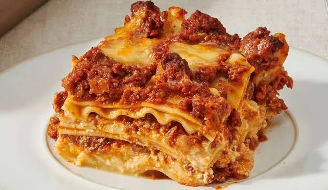

Back to Home
Lasagna Recipe

Description
Lasagna is a traditional Italian dish made by layering pasta sheets with a rich tomato
and minced meat sauce, creamy béchamel and grated cheese. Repeat the layers, cover with cheese
and bake in the oven until golden, crispy and bubbling. Let it cool slightly before serving
and enjoy\!
Ingredients:
- Lasagna Pasta Sheets
- 1 Onione Chopped
- 500g Minced Beef
- 2 Gloves of Garlic
- 400g Tomato Sauce
- 500ml Milk
- 50g Butter
- 50g Flour
- 200g Grated Cheese
- Olive Oil
- Salt and Pepper
- Italian Herbs
Instructions:
- Prepare the meat sauce: Fry the onion and garlic in olive oil. Add minced beef and cook until brown. Add tomato sauce, salt, pepper and herbs. Simmer for 15 minutes.
- Prepare the béchamel sauce: Melt butter in a saucepan, add flour and cook for 1 to 2 minutes. Gradually whisk in milk until smooth. Cook until thickened, season with salt and pepper.
- Layer the lasagna: In a baking dish, add meat sauce, pasta sheets, béchamel sauce and grated cheese. Repeat the layers.
- Add cheese: Finish with a layer of béchamel sauce and plenty of grated cheese.
- Bake: Place in the oven at 180°C for 35 to 45 minutes until golden and bubbling.
- Serve: Let the lasagna rest for 5 to 10 minutes before cutting and serving. Enjoy! 🍝